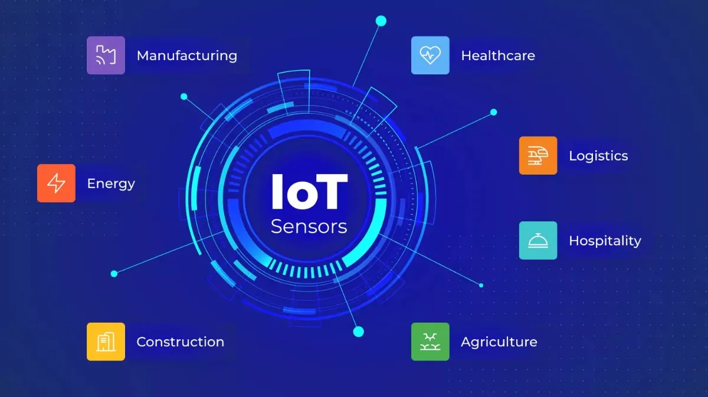
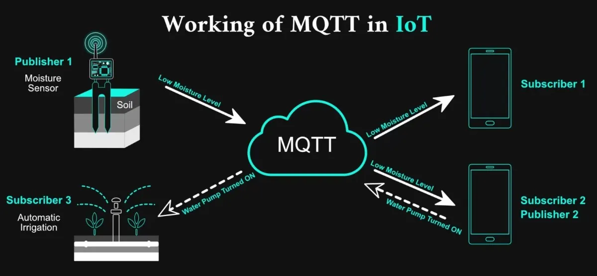
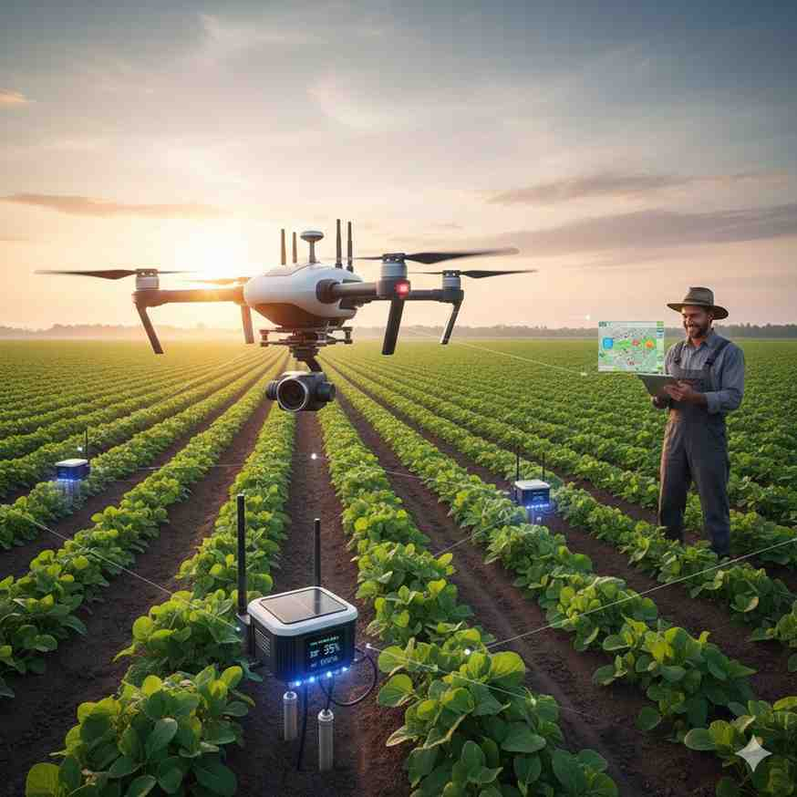
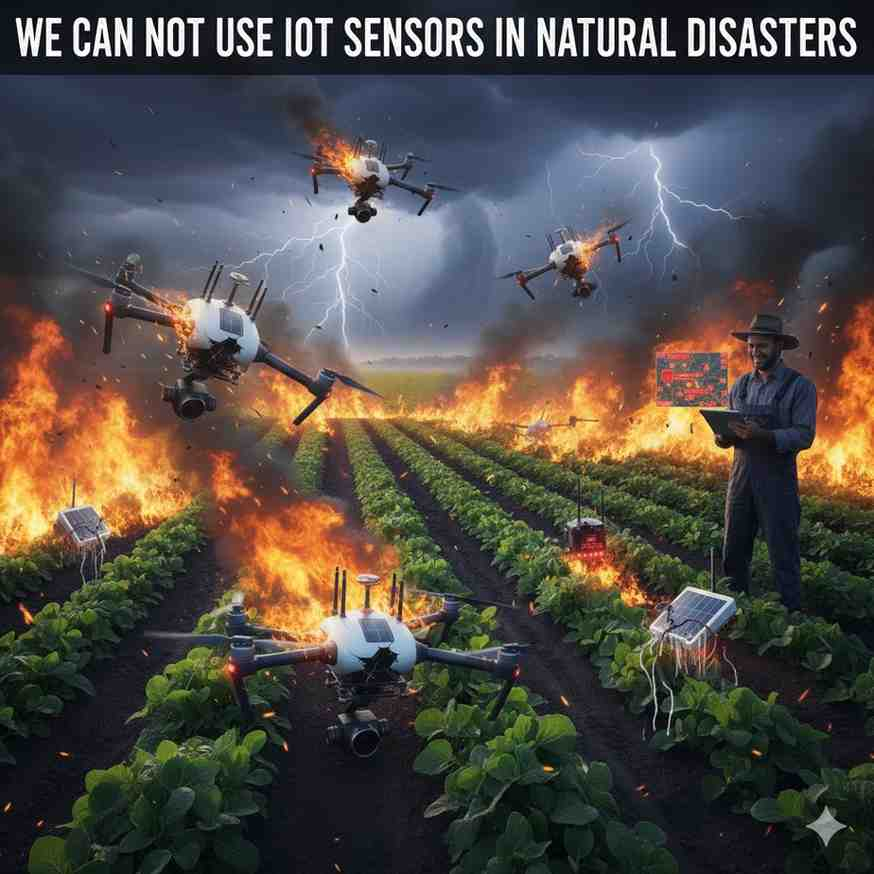
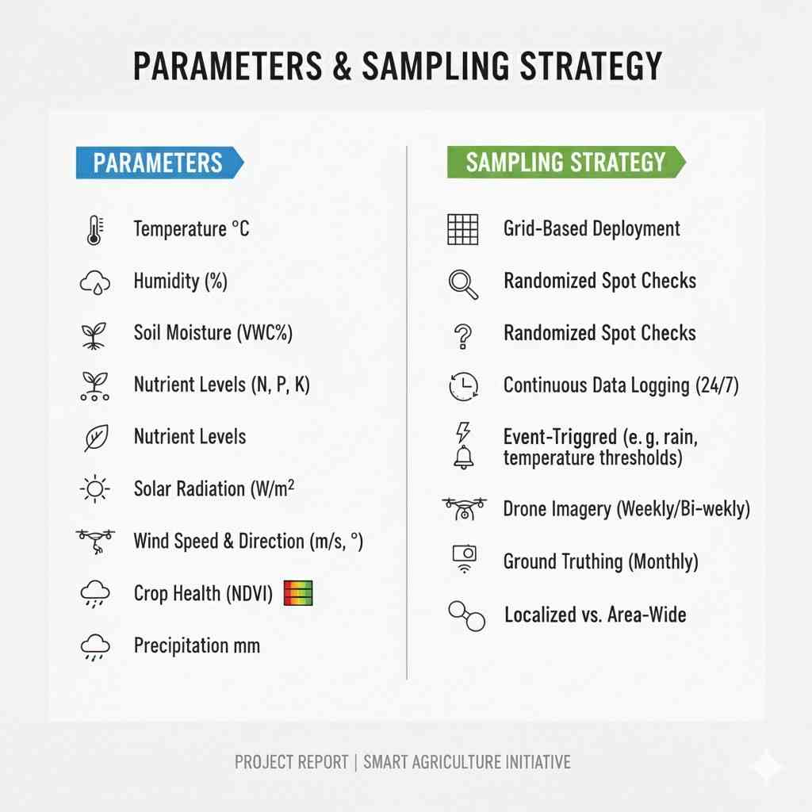

IoT Sensors in Precision Agriculture
Internet of Things (IoT) sensors are smart devices placed in the farm that continuously measure soil and environmental conditions and send data to the cloud. This data is converted into simple, actionable advice for the farmer.
1. What are IoT Sensors?
IoT sensors are small electronic devices that collect data from the field and send it using wireless communication. A typical agricultural IoT node contains:
- Sensor probes – soil moisture, soil temperature, air temperature, humidity, pH, NPK.
- Microcontroller – (e.g., Arduino, ESP32) that reads sensor values and controls power.
- Communication module – Wi-Fi, GSM/4G, LoRa, or NB-IoT to send data to the gateway/cloud.
- Power source – rechargeable battery + small solar panel, so it can run in the field.
- Enclosure – waterproof box so that electronics are protected from rain and dust.
Soil moisture
Temperature
Humidity
pH
NPK
Solar powered

Add an image of a complete IoT node here
(sensor probes + small box + solar panel).
2. How do IoT Sensors work in Agriculture?
The typical working cycle of IoT sensors in our precision agriculture system is:
- Sensors are installed in different plots (for different crops / soil types).
- Every few minutes they measure values (moisture, temperature, pH, etc.).
- Values are sent to a gateway or directly to the cloud server.
- The cloud compares sensor values with ideal ranges for that crop and soil type.
- Based on rules or AI models, the system generates advisories: “Irrigate Plot-2 after 3 hours”, “Add 40 kg urea per acre”, etc.
- These advisories reach the farmer’s mobile app in local language.
Data Flow (Text Diagram):
Field Sensors → Gateway / Internet → Cloud Database → Analytics / Rules Engine → Farmer Mobile App
Field Sensors → Gateway / Internet → Cloud Database → Analytics / Rules Engine → Farmer Mobile App
Example:  -->
Add a simple diagram image showing data
flow from sensor → cloud → mobile app.
3. Why are we using IoT Sensors? (Advantages)
- Real-time visibility of soil moisture, temperature and nutrients.
- Accurate irrigation scheduling – irrigate only when and where needed.
- Water saving – major reduction in over-irrigation and wastage.
- Better fertilizer management – apply NPK only when values go below threshold.
- Early stress detection – alerts when moisture / temperature / pH crosses safe limits.
- Support for automation – data can directly control pumps and valves.
- Historical data – season-wise history helps in planning and research.
Example:  -->
Add a screenshot of a dashboard or graph
showing moisture / temperature vs time.
4. Example Use Cases in Our Project
- Automatic Irrigation: If soil moisture goes below 30%, system sends a signal to turn ON the pump. When it reaches 60%, pump is turned OFF.
- Different Zones in Same Farm: Sandy soil dries faster than clay soil. Sensors in each zone allow different irrigation timing for each zone.
- Micro-climate Monitoring: Sensors record temperature and humidity every 10 minutes, helping predict disease risk (like fungal infections).
- Frost Alert: In cold regions, sensors warn farmer when temperature is going near 0°C.
- Soil Health Tracking: Periodic pH and EC readings show whether soil is becoming acidic or salty.
.jpg) -->
Add an image of sensors placed in different
parts of the field (different plots/zones).
-->
Add an image of sensors placed in different
parts of the field (different plots/zones).
5. Limitations / Challenges
- Initial cost of hardware and installation can be high for small farmers.
- Maintenance: sensors need calibration, cleaning and battery replacement.
- Connectivity issues in remote areas with weak mobile / internet coverage.
- Farmer training: farmers must be trained to understand app messages and alerts.
- Data quality: wrong installation depth or damaged probes can give wrong readings.
 -->
Add an image related to maintenance /
technician checking the IoT node.
6. Parameters & Sampling Strategy (for project report)
In our proposed system, we plan to configure the following design (you can customize as per your project):
- Sampling interval: every 15 minutes for moisture & weather, every day for pH & EC.
- Number of nodes: at least 1 node per 1–2 acres (more for high-value crops).
- Depth of moisture probe: 15–30 cm depending on crop root zone.
- Threshold example: Moisture < 30% → “Irrigate now”, Moisture > 80% → “Stop irrigation”.
- Data storage: values stored in cloud database with timestamp, GPS location and node ID.
 -->
Add an image showing configuration screen
or simple table of thresholds and intervals.